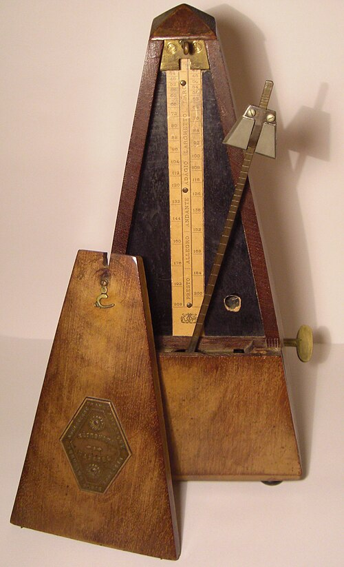
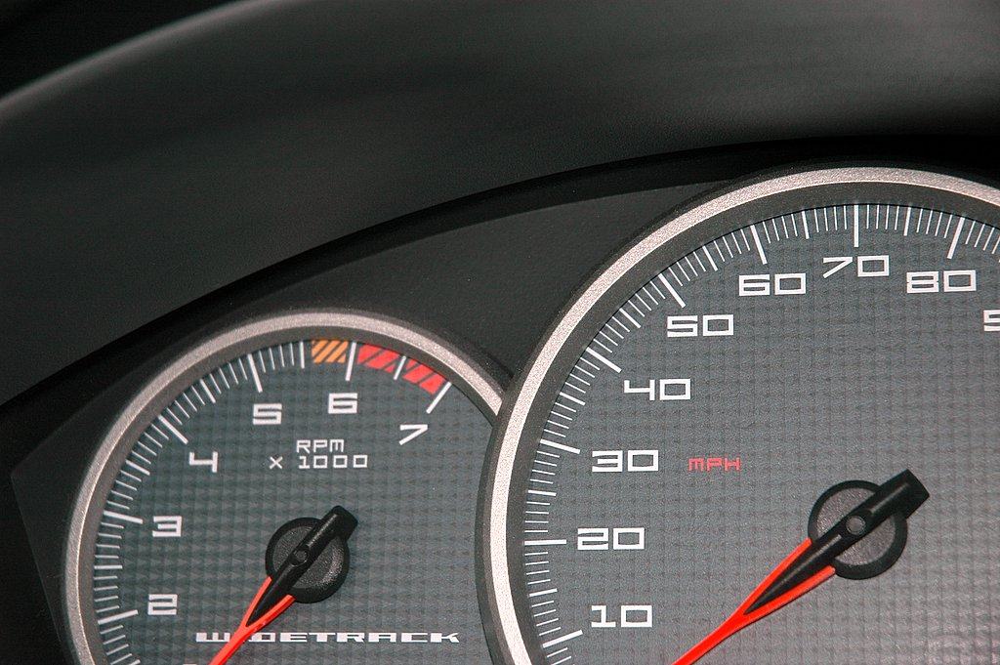
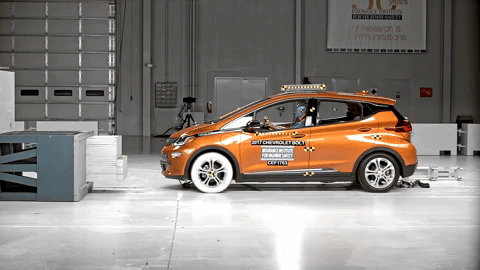

Fisica – Lezione 2
Conversioni, tempo, movimento
Maurizio Tomasi (maurizio.tomasi@unimi.it)
Lunedì 13 ottobre 2025
Argomenti di oggi
- Come si può misurare il tempo?
- Come convertire le unità di misura?
- Quali unità si usano per misurare la velocità degli oggetti in moto?
- Perché lanciando una palla per una strada in salita, questa dopo un po’ torna indietro?
Inquisitori accademici onorari
Il tempo
Misurare il tempo
La settimana scorsa abbiamo visto che il SI (sistema decimale) è molto comodo per fare calcoli, perché non usa suddivisioni strane.
Ma nella vita di tutti i giorni noi usiamo regolarmente un sistema di misura non decimale per misurare il tempo, che risale ai sumeri (4.000 anni fa!):
- 60 secondi equivalgono a 1 minuto
- 60 minuti equivalgono a 1 ora
- 24 ore equivalgono a un giorno
- Circa 30 giorni equivalgono ad un mese
- 12 mesi equivalgono ad un anno
Misurare il tempo
Questo modo di suddividere il tempo può essere problematico nei calcoli.
Ad esempio, a quanti metri al secondo corrispondono 70 km/h?
E due ore e mezza, a quanti minuti corrispondono?
Il sistema rivoluzionario francese
Nella scorsa lezione abbiamo detto che il SI deriva dal sistema decimale proposto dai rivoluzionari francesi
Gli stessi proposero un sistema decimale anche per il tempo:
- Un giorno è diviso in 10 “ore decimali” (2,4 ore)
- Un’ora decimale è divisa in 100 “minuti decimali” (86,4 s)
- Un minuto decimale è diviso in 100 “secondi decimali” (0,864 s)
Il sistema rivoluzionario francese
- Quando venne introdotto nel 1794, ne fu reso obbligatorio l’uso…
- …ma appena un anno dopo si tolse l’obbligo, con queste motivazioni:
- Usare gli stessi termini “ora” e “minuto” confondeva, ma introdurne di nuovi sarebbe stato complicato per la gente del popolo
- Cambiare tutti gli orologi della nazione sarebbe costato troppo
- È sopravvissuto in astronomia, dove oggi si usa regolarmente il Giorno giuliano: questa lezione è iniziata al tempo 2.460.961,875JD (circa)
Come si misura il tempo
Torniamo alla domanda iniziale: come si misura il tempo?
Consideriamo un problema pratico: voglio stabilire chi tra miei due amici, Luca e Serena, corre più velocemente, prendendo come riferimento una pista di atletica lunga 100 m
Come si misura il tempo
- Supponiamo ora che lo stesso problema abbia una complicazione
- Luca è presente oggi al campo d’atletica, ma Serena arriverà solo la settimana prossima
- Luca però domani deve partire per un viaggio, e starà via a lungo, quindi è impossibile farli correre contemporaneamente
Come si misura il tempo
- Aggiungiamo adesso un’altra complicazione
- In un momento in cui eravamo un po’ alticci, avevamo scommesso che non avremmo usato strumenti convenzionali come orologi o cronometri
- Dobbiamo inventare il nostro “cronometro”: possiamo usare qualsiasi oggetto d’uso comune per stabilire un’unità di tempo con cui misurare il tempo impiegato dai due corridori
- Ovviamente questo nostro “cronometro” deve garantire una misura ripetibile (Luca è sul campo già oggi, ma Serena arriverà solo la settimana prossima!)
Metodi di misura del tempo
- App “Orologio” del cellulare
- Orologio da polso
- Metronomo da musicista
- Clessidra
- Meridiana solare
- …

(Clessidra in vendita su Amazon)



How Does a Clock work ? | Crystal oscillator | Flip-Flop | Lavet type motor (YouTube)
Punti in comune
Abbiamo visto alcuni metodi con cui misurare il tempo:
- Clessidre
- Metronomi
- Oscillatori al quarzo (usati in orologi da polso e nei cellulari)
C’è qualcosa di comune nel loro principio di funzionamento?
Punti in comune
- Queste sono le cose in comune:
- C’è qualcosa che si muove (sabbia, braccio del metronomo, denti del diapason)
- Gli strumenti più comodi da usare hanno un movimento che si ripete, in linea di principio per sempre
- Il movimento è fondamentale: è solo tramite esso che ci si rende conto del passare del tempo!
Calcoli con unità di misura
Calcoli con unità di misura
- Quando diciamo che un’auto va a 90 km/h, stiamo usando due tipi di misure: una di spazio e una di tempo.
- La velocità misurata in km/h non usa le unità del SI, che dovrebbero essere m/s
- Convertire unità di misura basate sul tempo è complicato, perché abbiamo visto che le sue unità sono complicate!
- Vediamo ora alcune tecniche con cui convertire facilmente unità di misura
Calcoli con unità di misura
Le unità di misura si semplificano proprio come i numeri:
\frac{30\,\text{m}\cdot\text{kg}}{10\,\text{m}} = \frac{30\,\cancel{\text{m}}\cdot\text{kg}}{10\,\cancel{\text{m}}} = \frac{30\,\text{kg}}{10} = 3\,\text{kg}
Moltiplicate tra loro si combinano:
2\,\text{m} \times 3\,\text{m} = 6\,\text{m}^2.
Conversione di unità di misura
Comprensione del metodo
A parte casi “patologici” come la temperatura (°C, °F, K), di solito per convertire un’unità di misura basta moltiplicare o dividere per qualche coefficiente
Sorprendentemente, molti studenti sbagliano le conversioni (persino studenti di fisica di anni avanzati!)
Per comprendere il senso dell’operazione, prendiamo il discorso alla larga
La divisione
Il metodo che fornisco per capire come convertire tra unità di misura vuole essere molto intuitivo…
…ma richiede comunque di conoscere molto bene le quattro operazioni!
In particolare, occorre avere un’idea intuitiva del significato della divisione, che vada oltre il semplice conto meccanico.
Usi pratici della divisione
Supponiamo di aver contratto con un nostro amico un debito di 12€
Abbiamo stabilito che restituiremo questo debito in rate settimanali di 2€ ciascuna
Quante rate dovremo pagare?
\frac{12\,\text{euro}}{2\,\text{euro}} = \frac{12\,\cancel{\text{euro}}}{2\,\cancel{\text{euro}}} = 6\,\text{(numero di volte che devo pagare)}.
Quante rate dovremmo pagare se ogni rata fosse 3€?
E quanto se ogni rata fosse 4€?
E se ogni rata fosse 6€?
Quante rate dovremmo pagare se una rata fosse 12€?
\frac{12\,\text{euro}}{12\,\text{euro}} = \frac{12\,\cancel{\text{euro}}}{12\,\cancel{\text{euro}}} = 1\,\text{(numero di volte che devo pagare)}.
Euro e centesimi
Ovviamente 1€ = 100 centesimi
Di conseguenza, possiamo calcolare il numero di rate mescolando euro e centesimi:
1 = \frac{12\,\text{euro}}{12\,\text{euro}} = \frac{1\,200\,\text{cent}}{12\,\text{euro}} = \frac{12\,\text{euro}}{1\,200\,\text{cent}} = \frac{1\,200\,\text{cent}}{1\,200\,\text{cent}}.
Dagli euro al tempo
Quanto vale questo rapporto?
\frac{60\,\text{s}}{60\,\text{s}} = ?
Dagli euro al tempo
E questo?
\frac{1\,\text{min}}{60\,\text{s}} = ?
Proprietà del prodotto
Stiamo pazientemente avvicinandoci alla formula per la conversione di unità di misura
Ci serve però anche un’altra proprietà, stavolta legata al prodotto
(Avevamo infatti detto che nelle conversioni è importante sia la divisione che il prodotto!)
Uso del prodotto
Si deve fare una colletta di beneficenza tra cinque (5) amici.
Ognuno dà 10€. Quanti soldi si sono raccolti in tutto?
Uso del prodotto
10\,\text{euro} \times 5 = 50\,\text{euro}.
Uso del prodotto
E se ci sono otto (8) amici, ciascuno dei quali dona 5€?
Uso del prodotto
5\,\text{euro} \times 8 = 40\,\text{euro}.
Uso del prodotto
Cosa succede se a donare i 5€ è una persona sola?
Uso del prodotto
5\,\text{euro} \times 1 = 5\,\text{euro}.
Riassunto
Riassumendo, abbiamo individuato queste proprietà, che ci serviranno tra un momento:
Dividere una quantità per sé stessa è uguale ad 1, anche se la quantità è espressa in unità diverse (euro o centesimi, secondi o minuti)
Moltiplicare una quantità per 1 lascia la quantità invariata
Conversione di unità di misura
Il metodo più intuitivo per convertire da un’unità di misura ad un’altra è quello di moltiplicare la quantità per 1, scrivendo però questo 1 come un rapporto tra due espressioni che usano unità di misura diverse
Ad esempio, per convertire 660 secondi in minuti si fa così:
\begin{aligned} 660\,\text{s} &= 660\,\text{s} \times 1 = 660\,\text{s} \times \frac{1\,\text{min}}{60\,\text{s}} = 660\,\cancel{\text{s}} \times \frac{1\,\text{min}}{60\,\cancel{\text{s}}} = \\ &= 660 \times \frac{1\,\text{min}}{60} = \frac{660}{60}\,\text{min} = 11\,\text{min}. \end{aligned}
Avvertenze
Occorre avere un po’ d’occhio per capire cosa mettere al numeratore e al denominatore della frazione che vale 1!
L’obbiettivo è quello di semplificare l’unità di misura che vogliamo convertire, e far apparire quella che ci interessa.
Se anziché moltiplicare per 1 min/60 s avessimo moltiplicato per 60 s/1 min, avremmo solo fatto un pasticcio:
660\,\text{s} = 660\,\text{s} \times 1 = 660\,\text{s} \times \frac{60\,\text{s}}{1\,\text{min}} = 660 \times 60\,\frac{\text{s}^2}{\text{min}} = \ldots
Caso generale
Abbiamo visto il “trucco” di moltiplicare per 1 nel caso in cui ci siano misure di tempo, perché queste sono complicate
Ma in realtà il trucco ha una validità generale, e funziona anche con altre misure
Potete provare ad applicarlo per convertire tonnellate (1000 kg) in grammi, o chilometri quadrati in metri quadrati
La velocità
Chi è il più veloce?
Torniamo al caso della corsa tra Luca e Serena, ed andiamo un po’ oltre
Non ci basta vedere chi dei due sia più veloce, vogliamo anche misurare quanto
Come possiamo “quantificare” la velocità?
Distanza e tempo
La velocità usa un’unità di misura derivata: è una lunghezza divisa per un tempo
L’unità più comune sono i chilometri all’ora (km/h), che vengono misurati dai tachimetri sulle automobili
Nel SI però, la velocità si misura in metri al secondo (m/s)
Definizione della velocità
Perché dividere la distanza percorsa per il tempo?
Non si potrebbe invece decidere di moltiplicare tra loro distanza e tempo?
Oppure sommarli?
Oppure…
Velocità media e istantanea
Ci sono due tipi di velocità: media ed istantanea
Entrambe le velocità si misurano in metri al secondo (o km/h), ma il loro significato è diverso


Come usare i grafici
Nel mondo scientifico, si usano molto i grafici: essi consentono di rappresentare quantità numeriche altrimenti difficili da interpretare
Dovreste aver già visto nella scuola secondaria come si creano e si leggono i grafici
Facciamo però un esempio interattivo per rispolverare alcuni concetti importanti
Moto e forze
Abbiamo fatto sinora uno studio cinematico: la cinematica è la scienza che studia quantitativamente il moto dei corpi
Tre tipi di moti importanti nella cinematica sono i seguenti:
- Moto rettilineo uniforme: un corpo si muove in linea retta, sempre alla stessa velocità
- Moto rettilineo uniformemente accelerato
- Moto armonico
Sappiamo già tutto sul primo; vediamo ora brevemente gli altri due
Moto r. uniformemente accelerato
- È il tipo di moto che segue un oggetto che cade verticalmente
- La velocità aumenta, secondo dopo secondo, di 10 m/s (ossia 36
km/h):
- Se si parte da fermi, dopo 1 s si cade a 10 m/s
- Dopo un altro secondo, a 20 m/s
- Dopo un altro secondo, a 30 m/s…
- Il valore 10 m/s vale sulla Terra; per gli altri pianeti/satelliti è diverso (ad esempio, sulla Luna è 1,6 m/s, su Marte è 3,7 m/s).
L’accelerazione
È la misura di quanto cambia la velocità col tempo: a = \frac{\Delta v}{\Delta t}
Nel caso della caduta di un corpo, ogni secondo (\Delta t = 1\,\text{s}) il corpo aumenta la sua velocità di \Delta v = 10\,\text{m/s}, quindi a = \frac{\Delta v}{\Delta t} = \frac{10\,\text{m/s}}{1\,\text{s}} = 10\,\text{m/s$^2$}.
Attenzione: “accelerazione” si scrive con una elle!
Caduta sulla Luna

Come già accennato, sulla Luna l’accelerazione di gravità è appena 1,6  m/s².
Questo significa che i corpi impiegano più tempo che sulla Terra per cadere.
| Tempo | Velocit√† (üåç) | Velocit√† (üåï) | Posizione (üåç) | Posizione (üåï) |
|---|---|---|---|---|
| 0 s | 0 m/s | 0 m/s | 0 m | 0 m |
| 1 s | 10 m/s | 1,6 m/s | 5 m | 0,8 m |
| 2 s | 20 m/s | 3,2 m/s | 20 m | 3,2 m |
| 3 s | 30 m/s | 4,8 m/s | 45 m | 7,2 m |
| 4 s | 40 m/s | 6,4 m/s | 80 m | 12,8 m |
- Capire la posizione non è semplice: occorre conoscere il calcolo integrale!
- Se g è l’accelerazione (10 m/s² oppure 1.6 m/s²), la formula è \text{Posizione} = \frac12 \times g \times t^2
Moto armonico
È il tipico moto “avanti e indietro” di un metronomo, un diapason o un’altalena
Molto importante per l’acustica, come vedremo

Dalla cinematica alla dinamica
Perché il moto?
Spostiamoci ora dalla cinematica alla dinamica, che studia il motivo per cui le cose si muovono
Nel corso della storia del pensiero umano, furono avanzate molte ipotesi per spiegare il moto. Alcuni esempi:
Secondo Aristotele, le cose del mondo “sublunare” sono fatte di un miscuglio dei “quattro elementi” (terra, aria, acqua, fuoco), e tendono ad avvicinarsi a sostanze di natura simile: sassi, piume, fumo, bolle d’aria…
Secondo Buridano (ripreso da Oresme e Cartesio), gli oggetti si trasferiscono una sostanza, detta “impeto” (per cartesio: “quantità di moto”), che li fa muovere
La dinamica Newtoniana
|

|
Principi di Newton
- Lo stato naturale (imperturbato) dei corpi è il moto rettilineo uniforme
- Un corpo sottoposto a forze si muove di moto accelerato (o decelerato), e l’accelerazione è proporzionale alla somma delle forze
- Se un corpo A esercita una forza sul corpo B, il corpo B esercita una forza uguale e contraria sul corpo A
Primo principio

2001: a space odyssey (S. Kubrick, 1968)
Secondo principio

In quest’immagine (Little miss Sunshine, Dayton & Faris, 2006) agiscono tre forze:
- I personaggi che spingono il furgoncino
- Lo sfregamento delle ruote contro la strada (attrito)
- La resistenza dell’aria
Terzo principio

- La macchina si ferma (= cambia la sua velocità) perché il muro esercita una forza contro di essa
- Anche il muro si muove, perché si deforma
Principio di azione/reazione
Il terzo principio di Newton è detto anche “di azione e reazione”:
Se agisco con una forza su un corpo (“azione”)…
…anche il corpo reagisce con una forza su di me (“reazione”)
È il motivo per cui quando do un pugno al muro mi faccio male!
Discutiamo insieme
Perché se faccio rotolare una palla a terra, dopo un po’ si ferma?
Perché una piuma cade più lentamente di una palla da bowling? (Una volta data una risposta, guardate questo video)
Il concetto di “inerzia”
Se vi lanciassero addosso una palla e doveste fermarla con la mano, preferireste che fosse da ping-pong o da bowling?
Se il vostro mezzo si ferma in mezzo alla strada e dovete spingerlo fuori dalla carreggiata, è meglio che sia una Fiat 500 o un tir a pieno carico?
Massa inerziale
La “massa” (si misura in chilogrammi, kg) è una quantità intrinseca dei corpi che dice quanto è difficile metterli in moto (o fermarli)
Maggiore è la massa, maggiore è la forza necessaria ad accelerarli
In effetti, la seconda legge di Newton dice che se la forza totale è F, un corpo di massa m subirà un’accelerazione a = \frac{F}{m}
Massa inerziale
a = \frac{F}{m}
- Se la forza F è molto grande, ma la massa del corpo è colossale, l’accelerazione sarà piccola. Esempio: una Ferrari lanciata a tutta velocità contro un grattacielo ha una grande forza, ma il grattacielo ha una massa enorme e quindi l’urto lo fa accelerare pochissimo
- Se la forza F è piccola, ma la massa del corpo è piccolissima, l’accelerazione sarà grande. Esempio: soffiare su dei granelli di polvere imprime una forza piccola (nessuno viene ferito da un soffio!), ma la polvere ha massa piccolissima, e l’accelerazione è quindi grande.
Massa e peso
Nella vita quotidiana si tende a confondere la massa col peso.
Ma sono due concetti diversi: il primo è un’unità del SI, il secondo è la forza che fa cadere i corpi a terra. Quindi:
La massa produce resistenza all’azione delle forze anche per un corpo nello spazio vuoto (l’astronauta di 2001: odissea nello spazio)
Il peso invece è la forza che fa accelerare verso il suolo. Esso esiste solo sulla Terra o sui pianeti, e cambia il suo valore (sulla Luna il peso è minore).
[Il peso ha una sua particolarità: è l’unica forza al mondo che non dipende dalla massa. Ma questo discorso ci porterebbe lontano…]
Unità di misura
Se l’accelerazione si misura in m/s² e la massa in kg, allora \begin{split} a&= \frac{F}{m}\\ m \times a&= F \end{split} e quindi la forza F è il prodotto di m/s² e di kg
In onore di sir Isaac Newton, si definisce “Newton” la forza che accelera un corpo di 1 kg di 1 m/s²: 1\,\text{N} = 1\,\text{kg$\cdot$m/s$^2$}
Conclusioni
Cosa sapere per l’esame
- Tempo e sue unità di misura
- Calcoli con unità di misura
- Conversioni di unità di misura
- Cinematica: velocità, velocità media e velocità istantanea
- Dinamica di Newton; le tre leggi
- Differenza tra massa e peso